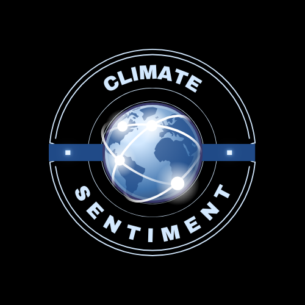

Climate Sentiment
Home
About
Dashboard
Contact
Books
Sign Out
Climate Book Recommendations
Explore our curated list of books on climate change and sustainability.
The Uninhabitable Earth by David Wallace-Wells
Silent Spring by Rachel Carson
How to Avoid a Climate Disaster by Bill Gates